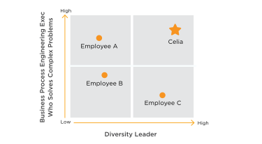
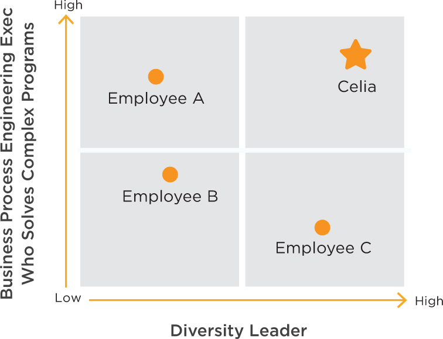

I recommend charting your specialty and key differentiator on a two-by-two matrix to see if you can find the right combination to give you a positioning advantage over your competitors. Put your specialty on the vertical y axis and put your key differentiation on the horizontal x axis. Who are your competitors? They might be fellow job seekers, other entrepreneurs seeking funding or those who are in line for the promotion you want. Your goal is to position yourself in the upper right-hand quadrant—the most advantaged position.
Here is Celia’s positioning in a visualization.
Figure 2.5
Positioning Chart
 
By adding Diversity Leader to her positioning chart, Celia is differentiating herself from other business process engineering experts in the company. Look for areas that help to set you apart but that you may currently discount. Take a fresh look at everything you have done or could do, then brainstorm how this expertise or experience could be of value to your company given current trends and pain points. You may surprise yourself with a unique way of differentiating your value.
Figure 2.6
Marcus, Software Engineer
Goal: Promotion and recognition in existing company, or new job opportunity
Marcus’s original positioning as a VP of Engineering with no other clarification does not differentiate him among other engineering executives. By adding “innovation expert” and talking about his innovation culture techniques and engineering talent management track record, he rises above the crowd and presents a compelling story. He is now positioned as a technologist skilled in human resources and culture—a rare combination.
If you seem to be a plain-vanilla manager, find some area or management practice in which you can excel. For example, can you be expert in a domain or skill area, a geographic area, a management technique or attribute, or an area of thought leadership? You may be able to leverage some capability or training from your past that just needs dusting off and repackaging. I had a client who had spent so many years in marketing that she forgot she had a degree in biology. By calling attention to her science education, we were able to position her credibly for a new job opportunity partnering with the company’s top scientists.
Figure 2.7
Asha, Entrepreneurial CEO
Goal: Get VC funding for start-up
Asha’s original positioning was solely as a CEO for a data analytics company. By adding the terms “cloud-based service,” “Big Data” and “visualizations,” she hit upon three keywords that made her and her company more interesting given current trends. In addition to being a technologist, she is positioning herself as an experienced start-up CEO who can sell a vision, scale and build a global company—all music to the ears of potential investors. She is painting a picture of how the company will be successful in marketing and operations.
Figure 2.8
Lee, Recent MBA Graduate
Goal: Find first job with new MBA degree
| Target Audience | For hiring managers at global management consulting firms |
| Problem Statement | Who want to expand in new markets with recent MBAs who can come up to speed quickly on technology, global markets and client consulting |
| Category | I am an MBA-trained business strategist and software project leader with Chinese language fluency and market understanding. |
| Value Proposition | I can provide immediate value to a wide range of client teams through my domain knowledge and capabilities in research, strategy development and project management. |
| Competitive Differentiation | Unlike other recent MBA graduates, I’m a software engineering leader who has led deadline-oriented project teams, and lived and traveled in Asia. I speak Mandarin and Cantonese (in addition to my native English). |
Lee’s key differentiation is combining software engineering leadership, his MBA training and his global experience and language capabilities. His ability to “provide immediate value” speaks to the needs of management consulting firms who need to get new consultants productive quickly. You may not have Lee’s résumé upon graduation from business school, but you can still market capabilities that employers seek. For instance, you can show project management experience through leading teams in your MBA program or doing something similar on a volunteer basis for an outside organization.
Figure 2.9
Mike, Software Engineer
Goal: Recognition as Visionary in Open Source Software
| Target Audience | For the CTO and Executive Team |
| Problem Statement | Who require industry-wide adoption of our technology to realize the corporate vision |
| Category | I am an open source software visionary with a proven track record of industry leadership and execution |
| Value Proposition | Who can accelerate industry adoption and standardization around our technology. |
| Competitive Differentiation | Unlike other open source developers, I can deliver technology initiatives and drive open source projects that further corporate objectives. |
We met Mike at the beginning of this chapter as a programmer who strategically positioned himself in new technology areas, that is, graphical web software. The positioning statement above shows how he is shifting his focus to open-source software and differentiating himself as a visionary leader who can execute.